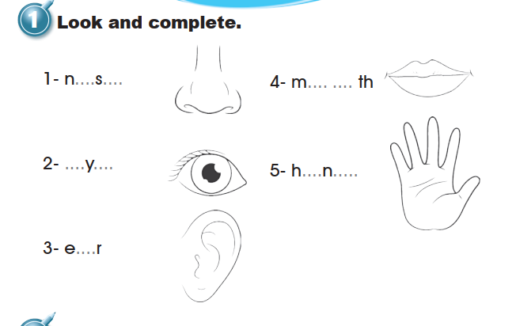
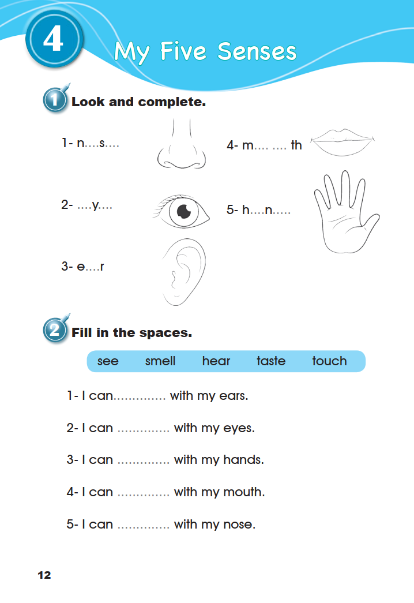
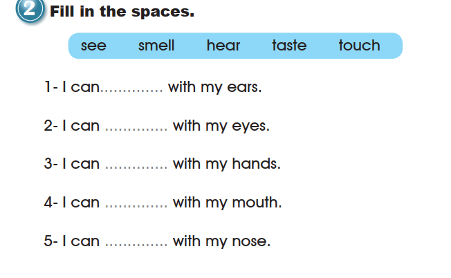
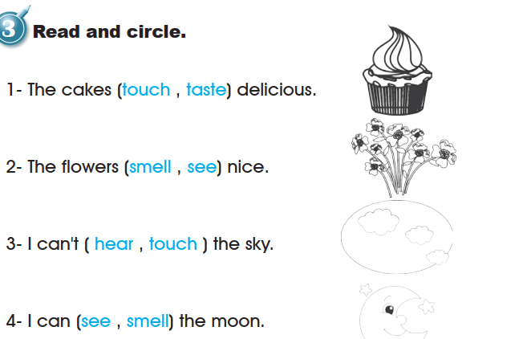
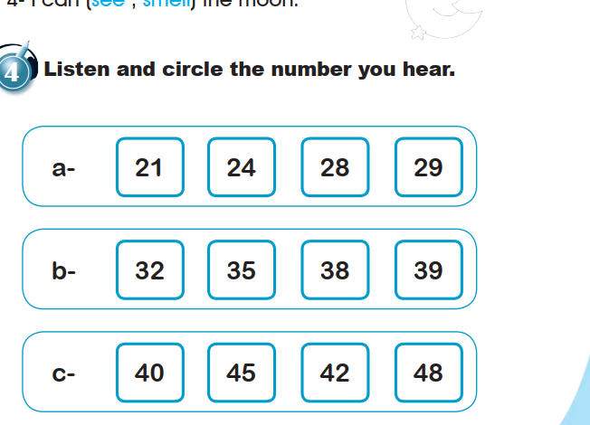
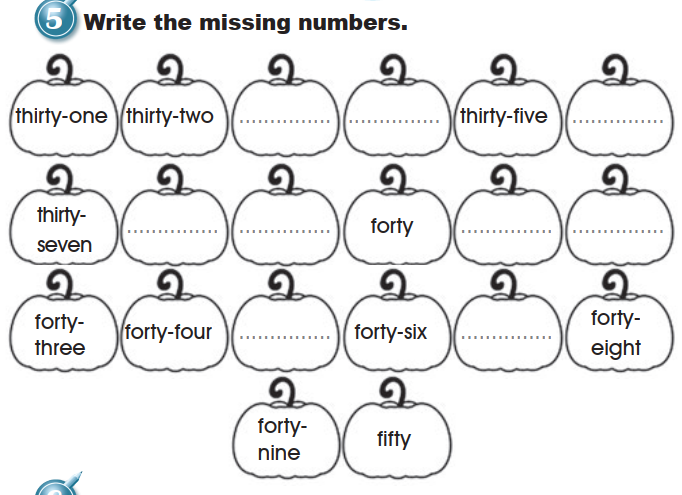
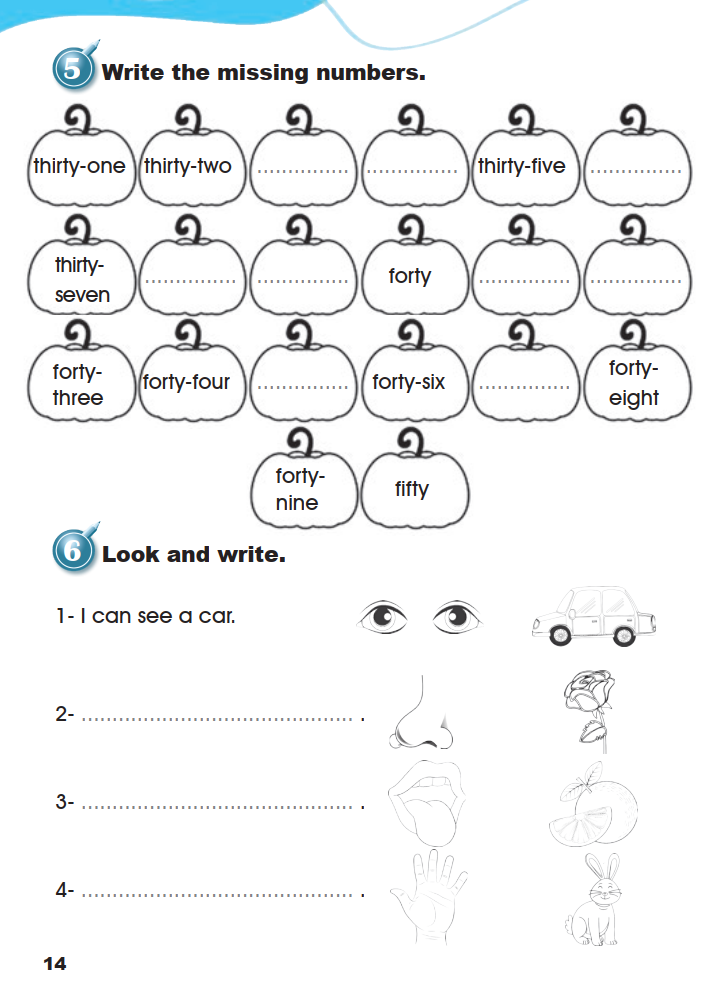
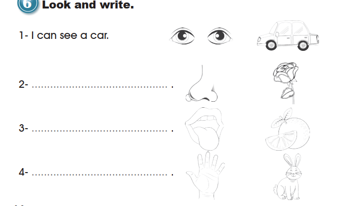

✦ ENGLISH FULL CURRICULUM
← Return to Grade 3 lessonsGRADE 3 · UNIT 1 · LESSON 4
Workbook
My Five Senses · Workbook · pages 12–14. All six exercises are preserved in source order; the Pupil’s Book keeps its own separate pages and practice state.
Source and audio. Every printed instruction, word and answer space is transcribed below. Exercise 4 depends on a recording that was not supplied; it is retained and clearly marked, never answered by guesswork.
1. Look and complete.

Open the source page · Workbook · p. 12
The original supplied image, unchanged. Open it at full size to review the artwork and print.

2. Fill in the spaces.
seesmellheartastetouch

3. Read and circle.

4. Listen and circle the number you hear.
Original recording required; unavailable and not scored. All twelve printed numbers are boxes to circle. Nothing shows which number is heard, so no choice is presented as correct.

5. Write the missing numbers.

Open the source page · Workbook · p. 14
The original supplied image, unchanged. Open it at full size to review the artwork and print.

6. Look and write.

Open the source page · Workbook · p. 14
The original supplied image, unchanged. Open it at full size to review the artwork and print.